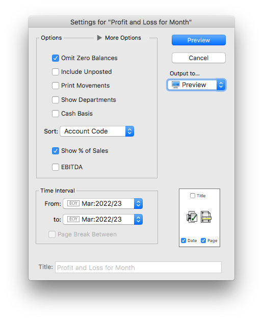
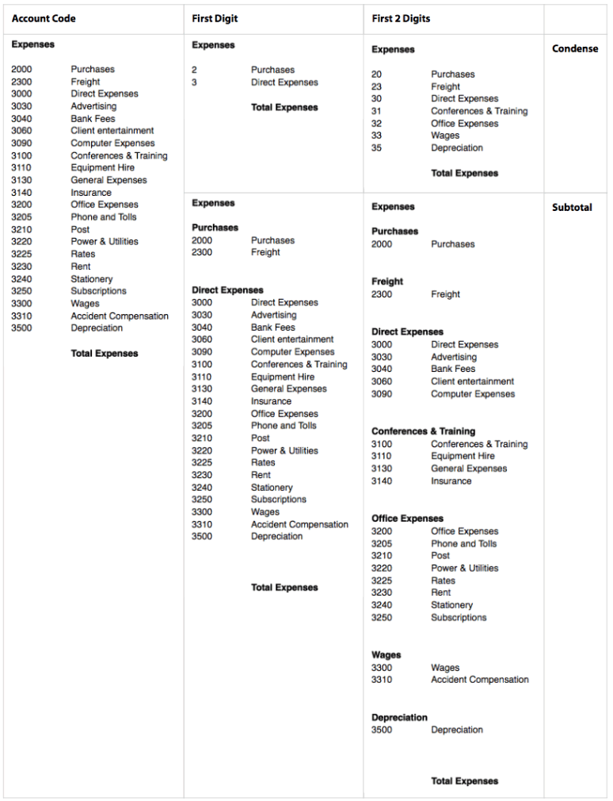

MoneyWorks Manual
Printing Reports
Reports can be printed in a number of ways1:
- directly from the Reports menu
- from the Index to Reports window
- by clicking on the report in a list’s sidebar
- by clicking the Refresh icon in the Preview toolbar
- in Gold, by opening the report and clicking the Test button
When you print a report a Report Settings window will be displayed. The format of this, and the options available in it, depend on the type of the report.
- Choose the report from the Reports menu
The Settings window for the report is displayed—the options available in this depend on the selected report.
- Alias Reports are equivalent to printing from a list, but without needing to open the list.
- For Built-in and Custom reports see Standard and Custom Reports;
- For Analysis Reports see Analysis;
- For Report Chains see Settings for Report Chains.
- Set the desired options for the report
- Choose the Output to (Print, Preview, etc)
For further information see Output Settings
- To prepare the report, click the Print, Send, Preview or Save button
The button name is determined by the output to settings.
Note: Make sure you do a Page Setup the first time you print a report—this information is printer-specific, and may need to be set for your printer.
Report Settings for Standard and Custom Reports
When you print a report, the Report Settings dialog box is presented, allowing you to specify run-time options (such as the report period, level of detail, whether to include the effects of unposted transactions etc). The available settings depend on the design of the report.

The options that you set in this dialog box (with the exception of the period range and Cash Basis) are saved with the report after it is printed and will be the default settings next time you print the report.
The standard report setting options are:
Omit Zero Balances: Accounts with zero balances/movement for the report period do not print out in the report.
Include Unposted: Unposted transactions for an account will be added into the account balances in the report, allowing an up-to-the-minute summary of accounts. Because these transactions may be modified or changed before they are finally posted, the balances in the report may change—a message to this effect is shown at the bottom of each page.
Print Movements: Prints summary details of all transactions for each account that appears in the report in the specified period—use this if you want to find out how the figures on the report are derived. Transaction details cannot be printed from purged periods as they have been removed.
Show Departments: In Gold only, when this option is on, each Account-Department combination appears on a separate line in the report. If this option is not turned on, the balances for each department are added and appear as a total figure for the base account code.
Sort: Used to sort or summarise the report. Accounts in each part of the report can be sorted by Account Code (the default), Account Description, or by Accountant’s Code (if you choose Accountant’s Code, the accounts in each part will be consolidated by the value in the Accountant’s Code field, and sorted by this).
Alternatively you can use this to print the report in a condensed form, or as a series of subsummaries, as described below.
Cash Basis: If set, the report will be printed on a cash basis. Income and expenses will show in the period paid, not the period invoiced.
EBITDA: Where available, setting this option will separate out Interest, Tax and Depreciation/Amortisation from Profit and Loss reports. This is based on the EBITDA settings in the underlying Account record.
Time Interval: The time interval for which the report will print data is determined by the pop-up menu(s) containing period names. It is possible to report on any of the periods in the system.
Where there are two period menus, you can print the report for a range of periods. A separate report is printed for each period in the range. Choose the first period from the From Period pop-up menu and the last period from the To Period menu. To print only one period, set both of these to the same period.
The Page Break Between check box allows you to print the report for each period on a new page.
Output to: Determines whether the report will be printed, previewed, emailed etc.—see Output Settings.

Page Setup & Margins:
Allows you to specify the Page Setup and the Margins, and also indicate whether you want the Title, Date and Page printed on the report—see Page Settings.
Title: You can enter a title that will be printed on the report here. This is not available if the Title option is turned off.
Subsummary Reports
The Subsummary mechanism collapses or subtotals account/ledger parts in a report. In its simplest form, this can provide a collapsed version of the report (e.g. collapsed to first 2 characters of general ledger code).
However because it can operate in dimensions other than just the account code, the subsummary mechanism is much more powerful than just collapsing reports. For example account ranges may be summarised by Account, Department, Categories (1-4), Classification, Accountant's Code, Colour or Type.
Summaries done by ledger code can condense or subtotal using just the first few digits of the code.

Condense to: Condenses the report to the selected level, in effect summarising the report and hiding the detail. The report will be shorter.
Subtotal by: Maintains the report detail, but has subtotals at each level. The report will be longer.

Advanced: The Advanced option opens the Subsummary Setup window, allowing multiple levels (up to five) of subsummary within the one report.
- Choose the first subsummary level from the first pop-up menu
- Set the slider to the required detail
Mega-summarised will summarise by just the first character, whereas Full Detail will not summarise.
-
Click the
 button to add more levels and repeat the process.
button to add more levels and repeat the process.
Up to 5 levels of subsummary may be applied at once.
Click the  button to remove a level.
button to remove a level.
The effect of the condense and subtotal options is shown in the following table. The report at left is prepared by Account Code (i.e. no subsummaries). The same report is shown Condensed and Subtotalled by First Digit and First 2 Digits.

Breakdowns
In Gold, if you use departments, categories or classifications, you can report on one or more of these by selecting it from the Breakdown list. This is hidden unless you tweak the More Options control.

|

|
|
More options Windows |
More options Mac |

Choose the type of breakdown that you want from the choices in the pop-up menu—Department, Category, Classification or Group.
No Breakdown: The report is prepared for all applicable accounts.
Department: A separate report is prepared for each department that is highlighted in the list. Only departmentalised accounts having these department(s) in their department group are included, and then only the specific sub-ledger for that department. Note that, as of version 9.1.9, there are separate Department reports (in Reports>Profit and Loss) for reporting on departments in columnar format.
Category: A separate report is prepared for each of the highlighted account categories. Only accounts in the category are included.
Classification: A separate report is prepared for each of the highlighted department classifications. Only departmentalised accounts having one or more departments with those classifications in their department group are included, and then only the specific sub-ledgers for those departments in the department classification.
Group: A separate report is printed for each department in the highlighted group(s). This is equivalent to a department breakdown where all the departments in the group have been highlighted, but has the advantage of automatically including any new departments added to the group since the report was created.
When you choose a breakdown, MoneyWorks will list all of the departments, categories, classifications or groups (as appropriate) in the Breakdown list. Highlight the ones for the report by clicking on them.
Use the All check box to highlight all codes in the list. When set, any codes that are added to your chart of accounts before you next print this report will be added to the set of highlighted codes automatically.
1 You can also invoke a report from an external script or through the REST APIs —see MoneyWorks Automation. ↩